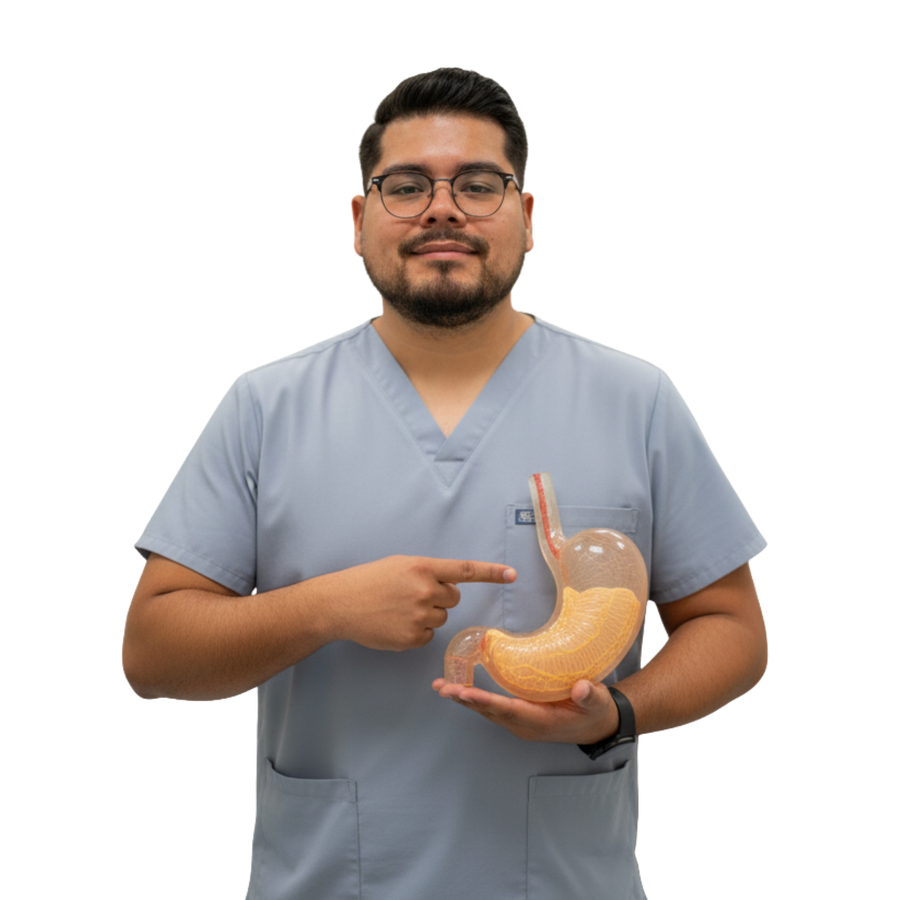

{{ t.heroBadge1 }}
{{ t.heroBadge2 }}
{{ t.heroTitle1 }}
{{ t.heroTitle2 }} {{ t.heroTitleCity }}
{{ t.heroDesc }}
{{ stat1Display }}
{{ t.stat1Label }}
{{ stat2Display }}
{{ t.stat2Label }}
{{ stat3Display }}
{{ t.stat3Label }}
5.0 ★
{{ t.reviewsLabel }}
{{ t.trust1 }}
{{ t.trust2 }}
{{ t.trust3 }}
{{ t.trust4 }}

{{ t.aboutKicker }}
{{ t.aboutTitle }}
{{ t.aboutP1 }}
{{ t.aboutP2 }}
{{ c.mono }}
{{ c.title }}
{{ c.detail }}
{{ t.procKicker }}
{{ t.procTitle }}
{{ t.procDesc }}
{{ t.whyKicker }}
{{ t.whyTitle }}
{{ w.num }}
{{ w.title }}
{{ w.desc }}
{{ t.orKicker }}
{{ t.orTitle }}
{{ t.orDesc }}
{{ t.testKicker }}
{{ t.testTitle }}
{{ t.testRating }}
★★★★★
“{{ rev.quote }}”
{{ rev.initials }}
{{ rev.name }}
{{ rev.detail }}
{{ t.testMore }} {{ t.testMoreLink }}
{{ t.contactKicker }}
{{ t.contactTitle }}
{{ t.contactDesc }}
{{ t.contactNumeros }}
Aviso de publicidad COFEPRIS No. 2614082002A00062 ·
Aviso de privacidad
·
Seguros
·
Preguntas frecuentes